Centro Comercial: $6,120 + $6,120
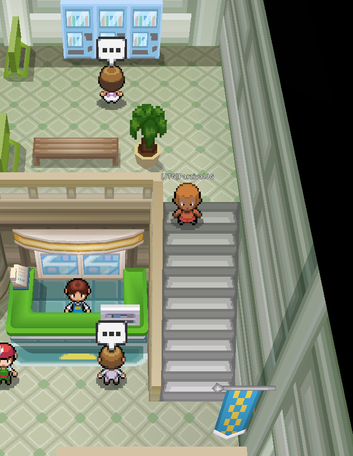
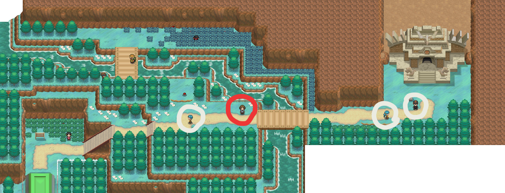
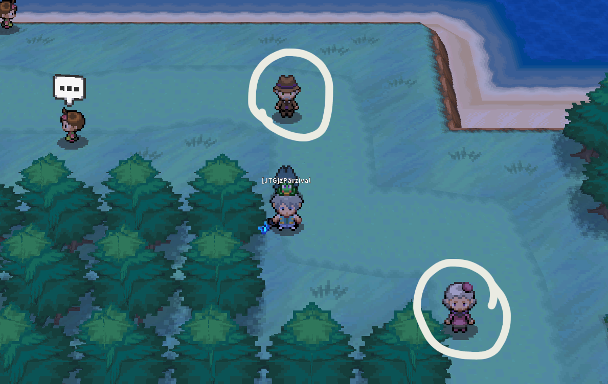
Usar Vuelo a Ciudad Rocavelo → ir al Sur por Ruta 214.
Usar Vuelo Otra vez a Rocavelo → Curar Salud/PP. Despues ir a la Ruta 215 por 2 NPC ($4,704 + $4,704).
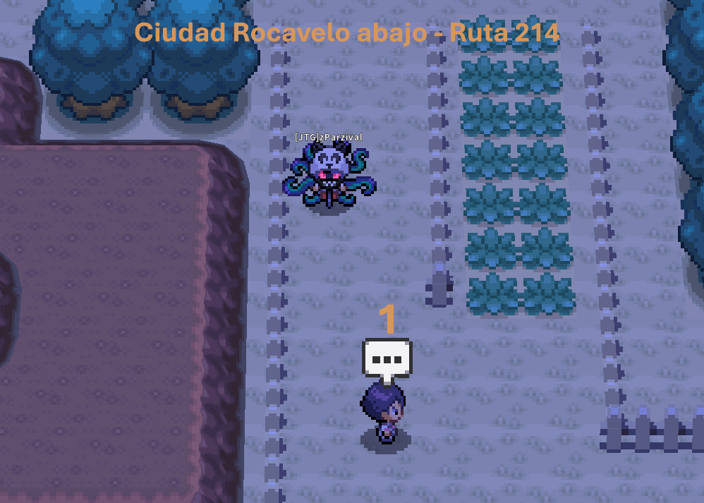
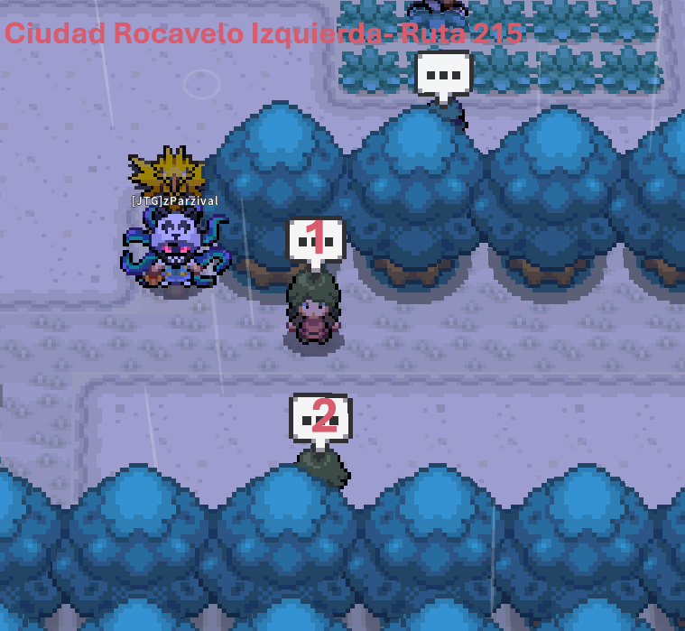
Usar Vuelo Ciudad Corazón → Ir por el Sur por Ruta 212 ($6,000 + $5,880 + $6,000 + $6,000).
Usar Vuelo a Ciudad Marina → ir Oeste por Ruta 222 ($6,360).
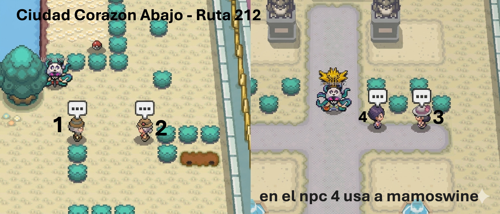
Usar Vuelo Zona de Sobrevivir → ir hacia Ruta 226 ($5,568).
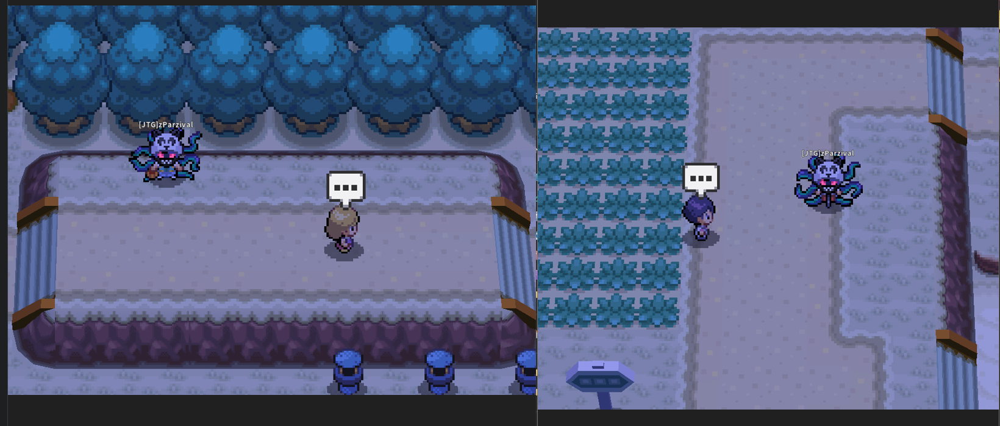
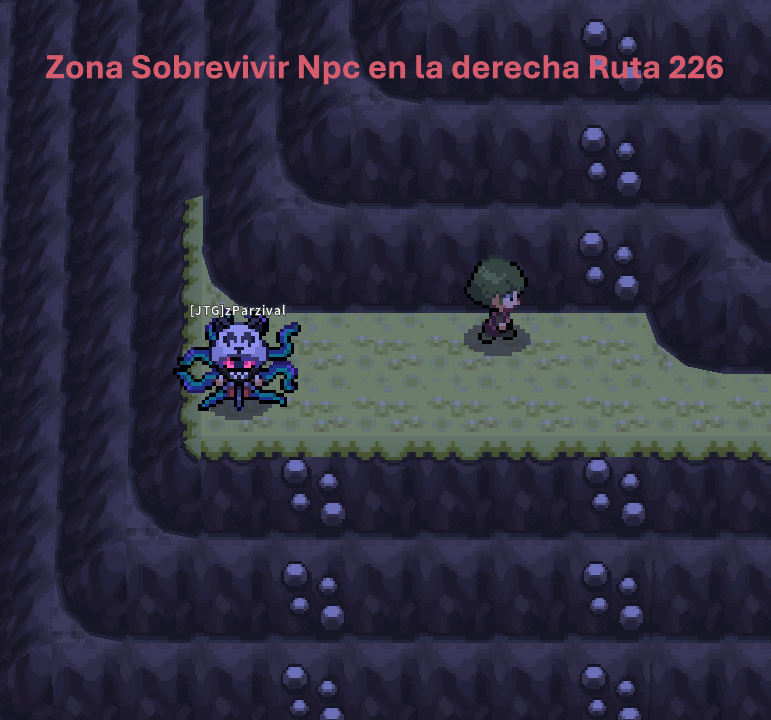
Usar Vuelo Zona de Sobrevivir → Curar HP/PP → Ruta 225.
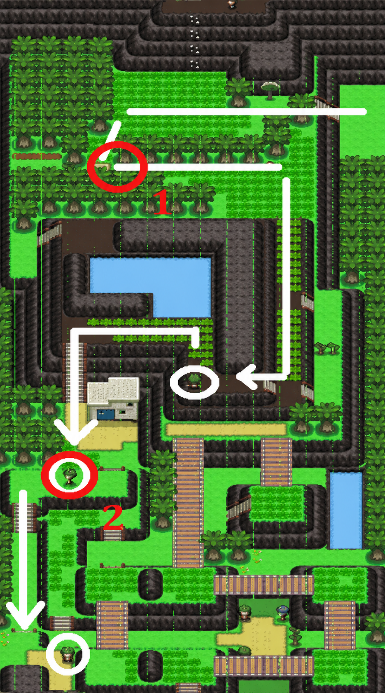
Usa Vuelo a Pueblo Caelestis → Antes De el primer combate usa Despejar (Defog).
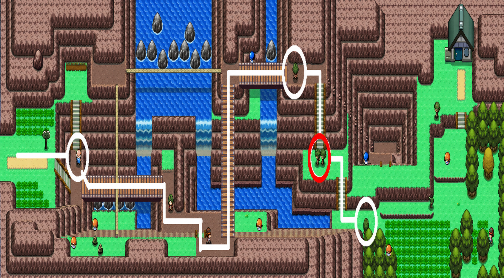
Usa Vuelo Pueblo Sosiego → ve al Norte. Combate Dúo: Terremoto
Posterior: Usa Vuelo a Área de Descanso → Cura HP/PP → Ruta 229 ($5,472 + $5,472).
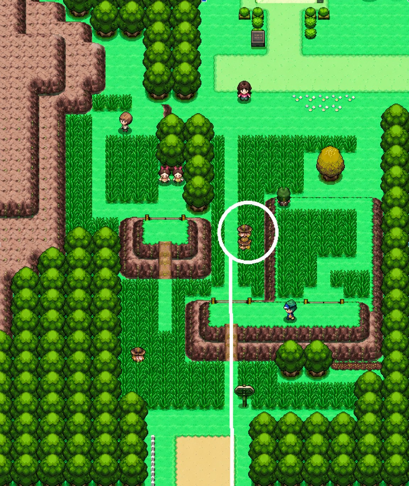
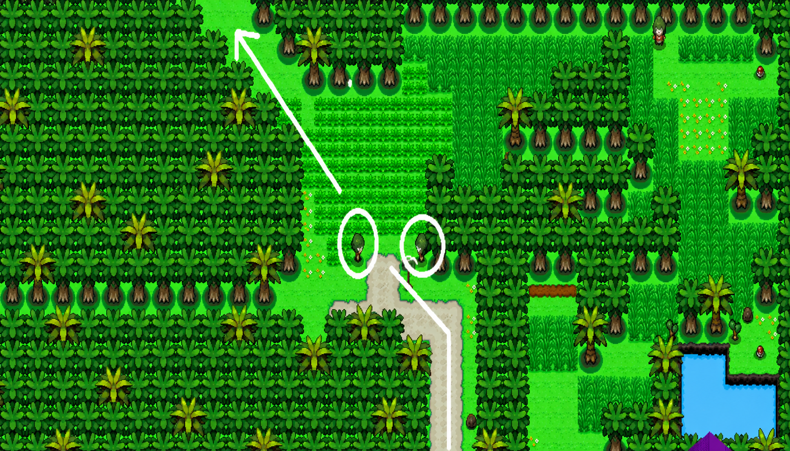
Ir Despues de Vencer a los 2 npc de ciudad descanzo Subir hacia la tormenta de arena de Arriba No Luchar Con el entrenador naranja.
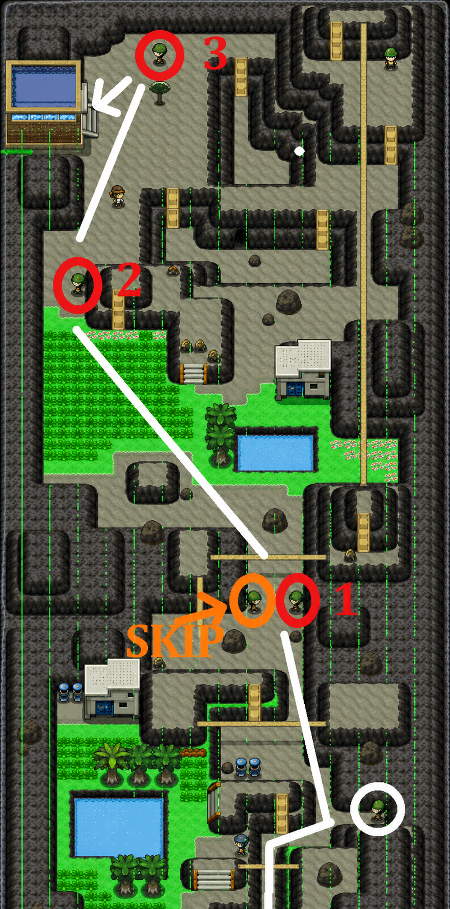
Usa Vuelo a Ciudad Puntaneva → Curar PP.
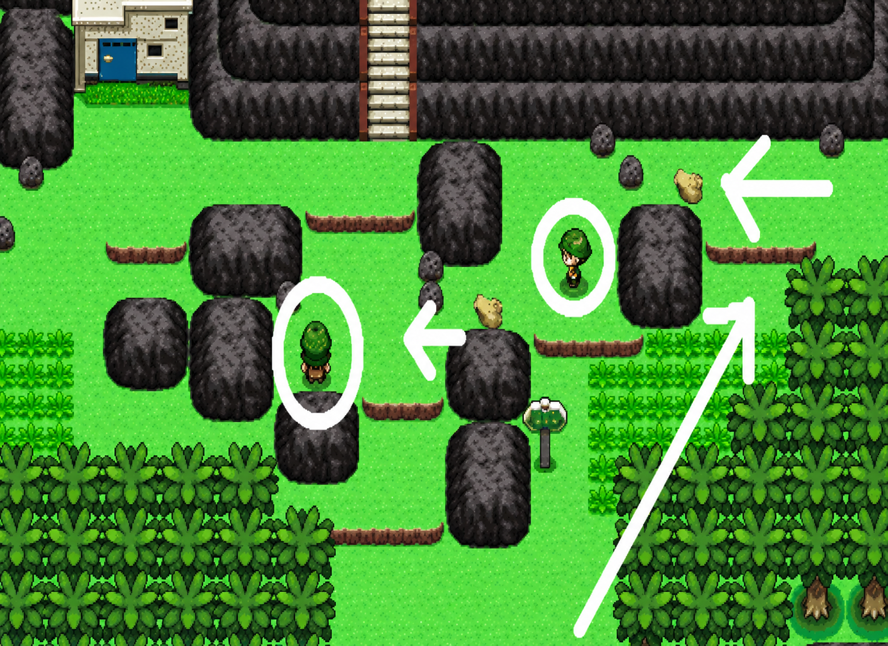
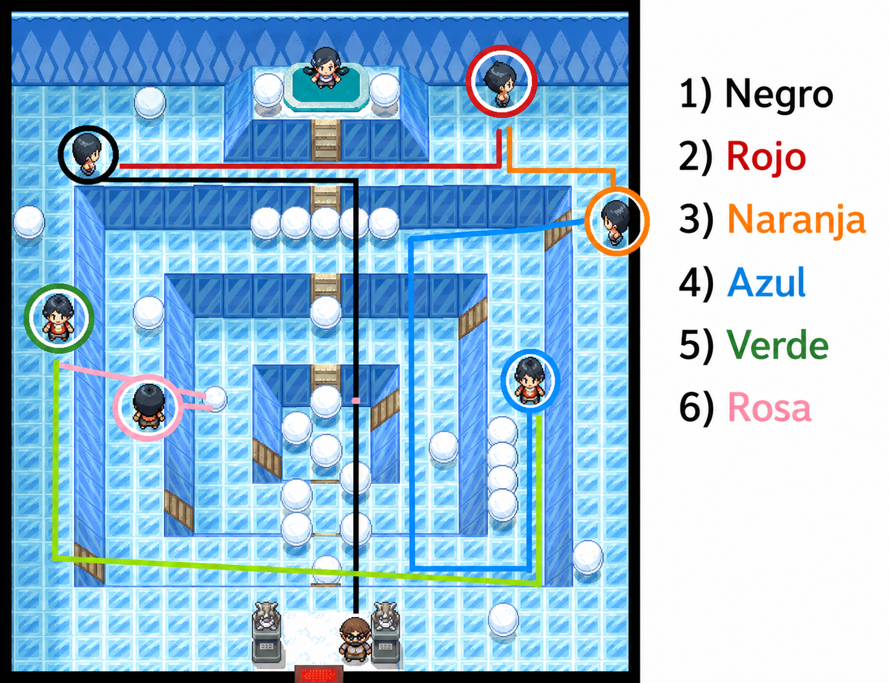